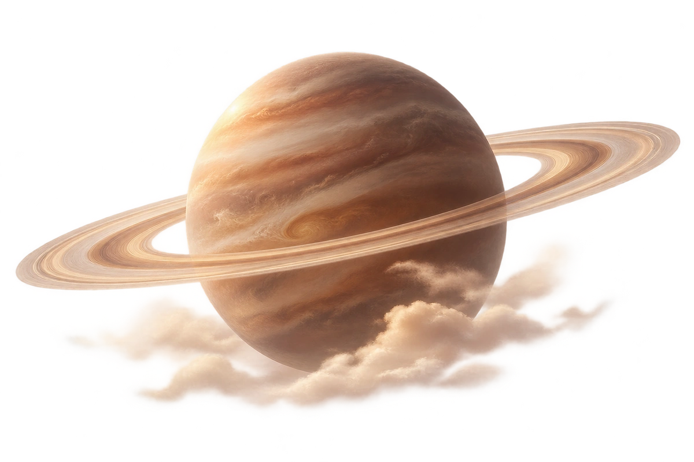
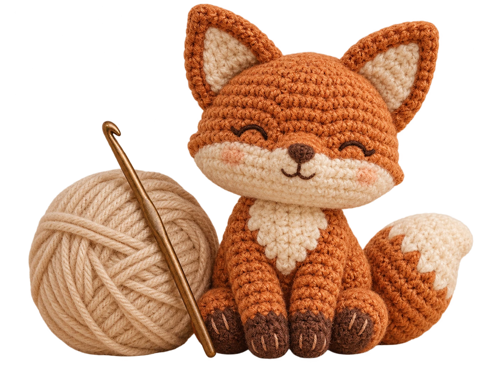

Обработка изображений
Свёртка изображений
Учебный проект по обработке RGB-изображений: свёрточные ядра и разные способы работы с границами изображения.
Смотреть на GitHubСтудентка 2 курса СПбГУ.
Программная инженерия.
Привет! Я Маша. Люблю разбираться в сложных вещах, писать код и находить маленькие радости за пределами экрана.

 Личная заметка
Личная заметка «Если я не отвечаю, скорее всего, я в зале».
 Личная заметка
Личная заметка «В детстве научилась летать. Приземляться оказалось сложнее».

Личная заметка«Если в книге нет вселенской загадки, зачем я её читала?»

Личная заметка«Один крючок, моток пряжи и минус шесть часов свободного времени».
Я родилась и выросла в Волгограде, училась в физико-математическом лицее. В девятом классе поняла, что особенно интересуюсь математикой, физикой и информатикой, и решила связать с ними будущую профессию.
Окончила школу с золотой медалью, хорошо сдала ЕГЭ и поступила в Санкт-Петербургский государственный университет. Сейчас учусь на втором курсе направления «Программная инженерия».
Большая часть времени уходит на учёбу и программирование. При этом продолжаю заниматься спортом, читаю научную фантастику и вяжу крючком.
С 1 по 7 класс занималась спортивной гимнастикой и получила звание кандидата в мастера спорта.
Учебные проекты по обработке изображений, Android-разработке и статическому анализу.
Обработка изображений
Учебный проект по обработке RGB-изображений: свёрточные ядра и разные способы работы с границами изображения.
Смотреть на GitHub
Android-приложение
Приложение с прогнозом через Open-Meteo, геокодированием и локальным хранением данных.
Учебный проект · ссылку добавлю позже

Сейчас в работе
Участвую в развитии открытого verihogg-lint: добавляю правила статического анализа, диагностики и тесты.
Репозиторий проектаМои учебные проекты можно посмотреть на GitHub.